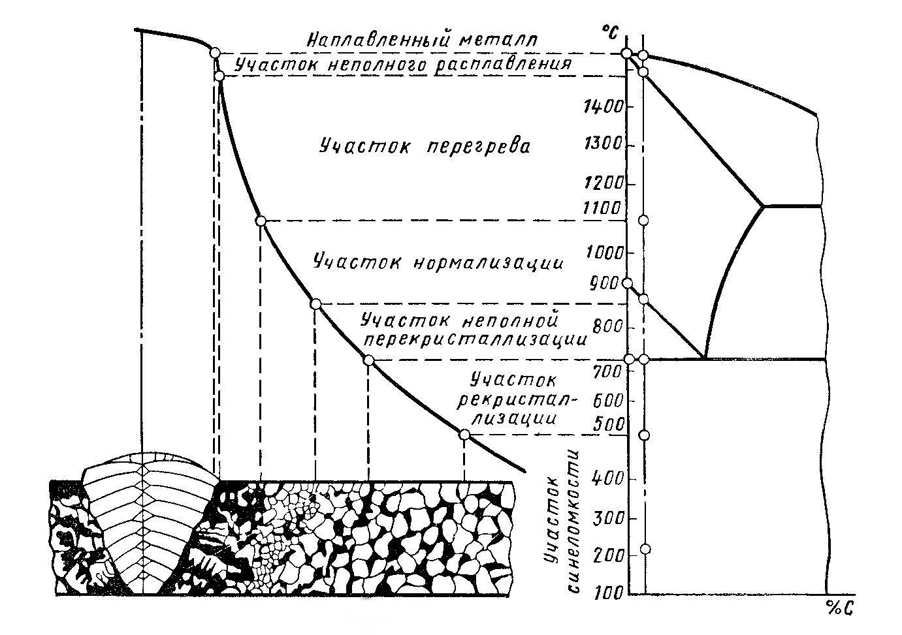

В машиностроении широко применяют сварнолитые и сварнокованые конструкции. Сварнолитые конструкции, состоящие из нескольких отливок, свариваемых между собой или с заготовками из проката и поковок, особенно целесообразно применять в тех случаях, когда невозможно отлить детали целиком, в частности, из-за недостаточной мощности металлургических печей или грузоподъемности кранов литейного цеха.
Применение сварнокованых конструкций упрощает технологический процесс горячей обработки. Сварную конструкцию получают путем сварки отдельных частей из одной или разных сталей.
В обоих случаях следует обращать особое внимание на термическую обработку сварных конструкций, четко назначать режим термической обработки. Для этого необходимо знать, какие структурные участки образуются в зоне сварки и чем характеризуется каждый участок. В наплавленном металле наблюдаются сильно развитые столбчатые кристаллы, имеет место ликвация, содержатся газы и неметаллические включения. Участок неполного расплавления (очень небольшого размера) сливается с границей шва и имеет ярко выраженную крупнозернистую, видманштеттову структуру. На участке перегрева крупнозернистая структура видманштеттового сложения более мелкая по мере удаления от наплавленного металла; на участке нормализации - мелкозернистая структура феррита и перлита; на участке неполной перекристаллизаuии имеются зерна феррита, не прошедшие перекристаллизацию, между которыми расположены более мелкие перекристаллизованные зерна феррита и перлита, а на участке рекристаллизации - мелкие зерна феррита и перлита.
В связи с неоднородностью структуры неоднородны также и механические свойства различных участков. Участок перегрева обладает пониженными механическими свойствами, а участок нормализации, наоборот, имеет высокие механические свойства, иногда даже превышающие свойства основного металла. Металл на участке синеломкости, структура которого хотя и не отличается от структуры основного металла, обладает пониженной ударной вязкостью.
Структуры зоны термического влияния легированных сталей, закаливающихся при быстром охлаждении после сварки, отличаются от структур, образующихся в низкоуглеродистой стали. Вместо участков перегрева и нормализации образуется участок полной закалки со структурой мартенсита, а вместо участка неполной перекристаллизации - участок неполной закалки со структурой мартенсита и феррита.
Для изготовления сварных конструкций применяют многие марки углеродистых и легированных сталей. Из углеродистых сталей обыкновенного качества используют стали Ст2, СтЗ, Ст4 из низколегированных конструкционных сталей 10ХСНД, 15ХСНД, 18Г2С, 25Г2С, 15ГФ, lбГС, 14ХГС, а также углеродистые котельные стали l5K, 20К и 25К. Сталь, предназначенная для сварных конструкций, должна дополнительно раскисляться алюминием, титаном и т. п.; при толщине проката более 25 мм должна поставляться в термически обработанном состоянии (отожженная или нормализованная). Стали 10ХСНД, 15ХСНЛ предназначены для наиболее ответственных сварных конструкций; стали 18Г2С, 25Г2С - для арматурных стержней периодического профиля в железобетонных конструкциях; стали 16ГС, 14ХГС- для менее ответственных сварных конструкций. Хорошо свариваются стали хромомарганцекремнистые (30ХГС), хромомолибденовые (15ХМ), хромоникелевые (30ХН3А), применяемые для изготовления ответственных сварных конструкций.
Устранение внутренних напряжений, возникающих при сварке, и изменение структуры и свойств наплавленного и основного металлов в зоне термического влияния достигается последующей после сварки термической обработкой. Внутренние напряжения снимают общим или местным высокотемпературным отпуском при 600-650 °С. Общий отпуск сварных конструкций производят в печи. Нагрев при местном отпуске (например, трубопроводов) осуществляется переносными термическими печами, специальными высокочастотными индукторами. Местный отпуск не устраняет полностью напряжений, вызываемых сваркой.
Новым методом термической обработки сварных соединений является локальный импульсный отпуск, при котором сокращается длительность процесса, снижается твердость, понижается температура хладноломкости и получается однородная структура, не отличающаяся от структуры основного металла. При таком методе зона термического влияния сварного соединения помещается в зазоре между медными зажимами сварочной машины, охлаждаемыми водой. На зажимы подается импульс сварочного тока для нагрева зоны термического влияния до температуры Ас3 + (30-40 °С). Далее подаются импульсы тока с таким расчетом, чтобы обеспечивалось медленное равномерное охлаждение зоны термического влияния со скоростью ниже критической при переходе точки Ar3 . При температуре на 30-40 °С ниже точки Ar3 прекращают подачу тока; общая длительность составляет 10- 11 с. В большинстве случаев в сварных конструкциях из низкоуглеродистых сталей внутренние напряжения снимать не требуется, так как они существенно не влияют на прочность конструкций. Повышение прочности при переменных нагрузках сварных конструкций из низкоуглеродистых сталей достигается обкаткой роликами или обдувкой дробью. После такой обработки в поверхностных слоях металла в результате пластической деформации возникают наклеп и напряжения сжатия. Высокий отпуск при 600-650 °С не повышает предела выносливости, а иногда даже понижает его.
Сварка конструкций из легированных сталей сопровождается структурными изменениями в зоне термического влияния (образование мартенсита), в результате которых резко снижается пластичность, возникают значительные напряжения, в связи с чем как в сварном шве, так и в основном металле могут появиться трещины. Поэтому при сварке конструкций из легированных сталей применяют предварительную термическую обработку, термическую обработку в процессе сварки и последующую после сварки (окончательную) термическую обработку.
Предварительная термическая обработка заключается в отжиге (полном, изотермическом или низкотемпературном - смягчающем) и применяется в том случае, если сварке подвергают неоднородный металл, имеющий внутренние напряжения. Сопутствующая сварке термическая обработка заключается в подогреве, осуществляемом до сварки, во время сварки и после сварки (выравнивающий нагрев) с последующим замедленным охлаждением. Последующая после сварки (окончательная) термическая обработка проводится для улучшения структуры сварного шва и зоны термического влияния и получения необходимых механических свойств. Наиболее полно это достигается закалкой с отпуском по обычному для данной стали режиму. Например, после термической обработки сварного соединения из стали 30ХГСА по режиму: закалка в масле от 880 °С, отпуск при 550 °С, механические свойства шва и околошовной зоны получаются такие же, как свойства основного металла. Микроструктура шва и основного металла одинакова - троостосорбит. Если детали перед сваркой были термически обработаны (закалены и отпущены), то после сварки целесообразно производить их отпуск при температуре отпуска предварительной термической обработки.
Для снижения твердости и возможности обработки сварного шва на металлорежущих станках производят высокотемпературный отпуск при 550-650 °С.